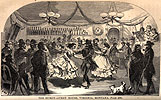

){kind=link}

|
[From] Chapter XXXIX. I visited the theater [in Virginia, Montana] to see the 'Lady of Lyons.' The admission-fee was one dollar and-a-half. The drop curtain was of cambric; the stage, as large as a very small bedroom; five tallow candles served for foot-lights; and the orchestra consisted of four performers. Many spectators wore revolvers; but the rough crowd was totally decorous, in deference to the half-dozen wives and sisters present.  I found the hurdy-gurdy more popular. At one end of the long hall, a well-stocked bar, and a monte bank in full blast; at the other, a platform occupied by three musicians; between, many lookers-on, with cigars and meerschaums. The orchestra leader shouted: 'Take your ladies for the next dance!' Half-a-dozen swarthy fellows fresh from the diggings, selected partners from the tawdry, bedizened women who stood in waiting. After each dance the miners led their partners to the bar for whisky or champagne; then after a short pause, another dance; and so the sorry revelry continued from nine o'clock until nearly daylight, interrupted only by two fights. For every dance each masculine participant paid one dollar, half going to his partner, and half to the proprietor. This latter functionary, who was dealing monte, with revolver at his belt, assured me that his daily profits averaged one hundred dollars. Publicly, decorum was preserved; and to many miners, who had not seen a feminine face for six months, these poor women represented vaguely something of the tenderness and sacredness of their sex. |